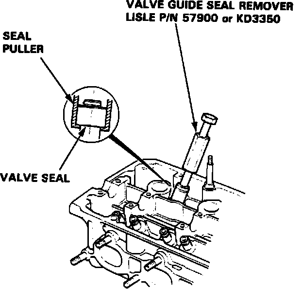

Valve Spring: Service and Repair
Fig. 60 Valve Guide Seal Removal:

1. Using suitable socket and plastic mallet, tap valve retainer to loosen valve keepers.
2. Install valve spring compressor tool No. 07757-PJ1010A or equivalent, then compress spring and remove valve keeper.
3. Install suitable valve guide seal remover, Fig. 60.
4. Remove valve seal.
5. Reverse procedure to install, noting the following:
a. Lubricate valve stems prior to spring installation.
b. Position valve springs with painted portion or closely wound coils toward cylinder head.
c. With springs installed, lightly tap end of each valve stem several times to seat valves and keepers.